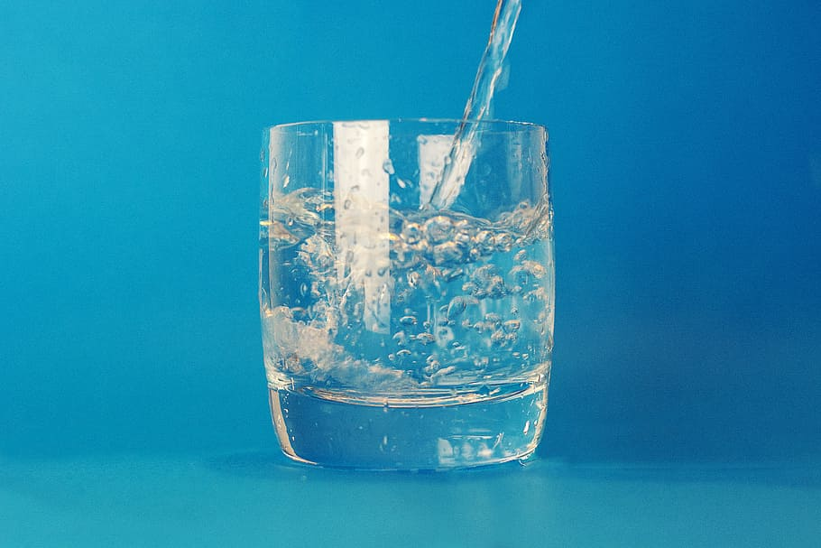

New Zealand has over 425,000km of streams and rivers and around 4,000 lakes.
The beauty of New Zealands lakes, waterfalls, and rivers have attracted people from all over the world. From the great lengths of the waikato river spanning 425 kilometres to the Sutherland Falls regraed as the highest waterfall at 580 metres.
But pollution is becoming a major problem in New Zealand.
The beauty of New Zealands lakes, waterfalls, and rivers have attracted people from all over the world. From the great lengths of the waikato river spanning 425 kilometres to the Sutherland Falls regraed as the highest waterfall at 580 metres.
But pollution is becoming a major problem in New Zealand.